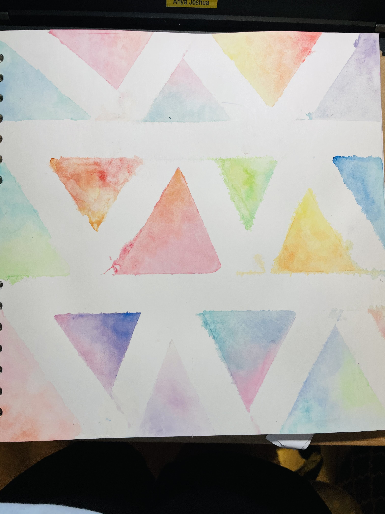

Besides oil& chalk pastels,sketches and colour pencil artworks, i also enjoy working with water colours.Here are a few of my favourite works.
| |
|
 |
This artwork took me 43 minutes and that day i just felt influenced by the theme under the sea |
|
This is a slightly abstract artwork unlike my others. |
|
I love to draw in a cartoony style and this is one of my artworks and it was coloured in watercolour. |
|
this is one of my artworks coloured in watercolour. |
|  |
this is something i have done with watercolours and masking tape |